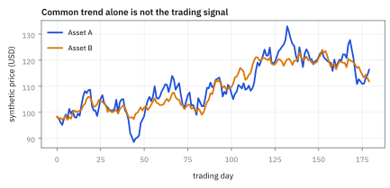
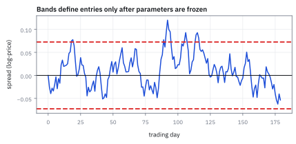
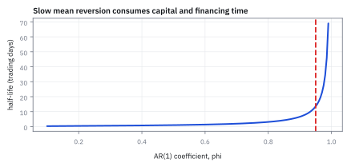
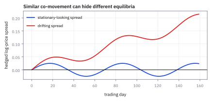

15.4 Pairs Trading and Cointegration
เทรดส่วนต่างเมื่อมีเหตุผลว่ามันจะกลับ ไม่ใช่เพราะเส้นดูใกล้กัน
หุ้น A \$42 หุ้น B \$28 hedge ratio 1.15 spread เฉลี่ย −0.025 แกว่ง 0.032 ดึงกลับ 0.05 ต่อวัน วันนี้ควรเข้าเทรดไหม ซื้อขายกี่หุ้น และคาดกำไรเท่าไรในกี่วัน?
เฉลย: spread −0.0944 z −2.17 เกินเกณฑ์ 2 ซื้อ A 23,810 หุ้น short B 41,071 หุ้น ถ้ากลับถึงค่าเฉลี่ยได้ \$69,366 ระยะห่างหดครึ่งใน 13.9 วัน ถึงเส้นออกราว 29 วัน
ศัพท์ที่ใช้ในหัวข้อนี้
- pairs trading
- strategy ที่ซื้อหนึ่ง asset และขายอีก asset เพื่อให้เดิมพันกับ relative value ใช้ลด market exposure แต่ยังเหลือ basis และ model risk
- cointegration
- ความสัมพันธ์ของ series ที่อาจ non-stationary แต่ linear combination หนึ่ง stationary ใช้สร้าง spread ที่มี equilibrium hypothesis
- spread
- linear combination ของราคาหรือ log prices สองตัว ใช้เป็น state variable สำหรับ entry, exit และ risk limit
- stationary
- property ที่ distribution ไม่เปลี่ยนตามเวลาใน sense ที่กำหนด ใช้ทำให้ mean และ variance ของ spread มีความหมายเชิง forecast
- z-score
- spread ลบ mean หารด้วย standard deviation ที่ estimate ใน window เดียวกัน ใช้ทำให้ threshold เปรียบเทียบกันได้
- half-life
- เวลาที่ expected deviation จาก equilibrium ลดเหลือครึ่งใน mean-reversion model ใช้เลือก horizon และ stop discipline
- standard deviation
- รากที่สองของ variance ซึ่งวัดขนาดการกระจายในหน่วยเดิม ใช้แปลง spread เป็น z-score ที่เปรียบเทียบข้ามช่วงได้
- long
- position ที่ได้กำไรเมื่อ asset ขึ้นและขาดทุนเมื่อ asset ลง ใช้เป็นขาที่คาดว่า relative value จะฟื้น
- short
- position ที่ได้กำไรเมื่อ asset ลงและขาดทุนเมื่อ asset ขึ้น ใช้เป็นขาตรงข้ามพร้อมข้อจำกัด borrow
- volatility
- ความผันผวนของผลตอบแทนตาม horizon ที่ระบุ ใช้ตั้ง position size และประเมินการสูญเสีย ไม่ใช่ทิศทางราคา
- basis
- ความต่างระหว่าง exposure ที่ hedge ตั้งใจชดเชยกับ exposure ที่เหลือจริง ใช้ติดตามความเสี่ยงเมื่อ hedge ratio หรือความสัมพันธ์เปลี่ยน
- autoregressive (AR) order-one model
- model ที่ค่าปัจจุบันพึ่งค่าก่อนหน้าหนึ่งช่วง ใช้ประมาณความเร็ว mean reversion และ half-life ของ spread
- Augmented Dickey–Fuller (ADF) test
- การทดสอบสมมติฐานว่ามี unit root ในอนุกรมเวลา ใช้คัดกรองว่า residual spread มีหลักฐานของ stationarity หรือไม่
- bid
- ราคาสูงสุดที่ผู้ซื้อพร้อมรับในขณะหนึ่ง ใช้ประเมินราคาขายที่ทำได้และต้นทุน round trip
- ask
- ราคาต่ำสุดที่ผู้ขายพร้อมเสนอในขณะหนึ่ง ใช้ประเมินราคาซื้อที่ทำได้และต้นทุน round trip
- slippage
- ส่วนต่างระหว่างราคาที่ตั้งใจซื้อขายกับราคาที่ execute ได้จริง ใช้หักจาก paper profit และทำ stress cost
- drift
- แนวโน้มเฉลี่ยที่ผลักอนุกรมไปทิศหนึ่งต่อหน่วยเวลา ใช้แยก spread ที่หนี equilibrium จาก spread ที่แกว่งรอบระดับคงที่
- Ornstein–Uhlenbeck (OU) process
- stochastic process ต่อเนื่องที่มีแรงดึงกลับสู่ระดับ equilibrium เฉลี่ย ใช้สร้างแบบจำลอง spread และคำนวณ half-life เชิงปริมาณ
สัญลักษณ์ที่ใช้ในหัวข้อนี้
| สัญลักษณ์ | ความหมาย | หน่วย |
|---|---|---|
| $P_{A,t},P_{B,t}$ | ราคาปิดของสินทรัพย์ A และ B | USD ต่อหุ้น |
| $p_{A,t},p_{B,t}$ | natural log ของราคาปิด | unitless log-price |
| $h$ | hedge ratio ของขา B ต่อขา A | unitless |
| $s_t$ | ค่า spread $p_A-hp_B$ | log-price |
| $\mu,\sigma_s$ | ค่าเฉลี่ยและ standard deviation ของ spread | log-price |
| $z_t$ | spread ที่ปรับเป็นมาตรฐาน | standard deviations |
| $\phi$ | coefficient ของ AR(1) mean reversion | unitless ต่อวัน |
| $t_{1/2}$ | half-life ของ deviation | trading days |
| $V_A,V_B$ | gross notionals ของสองขา | USD |
ที่มาที่ไป: สองเส้นที่เดินไปด้วยกัน แต่ต่างคนต่างเดินสุ่ม
ปัญหาทางสถิติที่ค้างมานานคือ ราคาสองตัวที่ต่างคนต่างเดินสุ่ม เวลาเอามาใส่ regression จะให้ผลที่ดูดีมากทั้งที่ไม่มีความสัมพันธ์จริงเลย ซึ่งเป็นหัวข้อ 15.5
แต่บางครั้งสองเส้นเดินไปด้วยกันจริง ๆ ด้วยเหตุผลทางเศรษฐกิจ และส่วนต่างของมันนิ่งอยู่รอบค่าหนึ่ง
Robert Engle กับ Clive Granger พัฒนาเครื่องมือที่แยกสองกรณีนี้ออกจากกันได้ในปี 1987 และทั้งคู่ได้รางวัลโนเบลในปี 2003
สำหรับโต๊ะเทรด ความต่างนี้คือความต่างระหว่างกลยุทธ์ที่มีเหตุผลรองรับ กับการเดิมพันว่าเส้นสองเส้นที่บังเอิญดูคล้ายกันจะกลับมาหากัน
ก่อนดูตัวอย่าง: stationarity และ ADF แบบย่อ
stationary ในบทนี้หมายถึง spread ที่มี mean และ variance ไม่ไหลตามเวลาอย่างเป็นระบบ จึงพอมีระดับปกติให้วัดระยะห่างได้ ถ้า spread มี unit root มันอาจเดินหนีไปเรื่อย ๆ และ z-score เก่าไม่ใช่จุดกลับตัว
Augmented Dickey–Fuller (ADF) test เริ่มจากสมมติฐานว่า spread มี unit root เมื่อข้อมูลแรงพอให้ปฏิเสธสมมติฐานนี้ เราจึงพอมีเหตุผลใช้ mean reversion—แต่ยังไม่มีคำรับประกัน. บท 16 จะขยายเรื่อง stationarity และความจำตามเวลา
โจทย์ให้อะไรมาบ้าง: ราคา A เท่ากับ \$42, ราคา B เท่ากับ \$28, hedge ratio 1.15, mean ของ spread -0.02500, standard deviation 0.03200 และความเร็วดึงกลับ 0.05 ต่อวัน ซึ่งเท่ากับ coefficient รายวัน 0.9512 ถามว่า spread ห่างค่าปกติเกินสองเท่าหรือยัง แล้วควรตั้ง time stop กี่วัน.
ขั้นที่ 1 — สร้าง spread จาก log prices
การเทรดแบบจับคู่เทรดส่วนต่าง ไม่ใช่ราคา สี่บรรทัดนี้อธิบายว่าทำไมต้องใช้ log และทำไมต้องมีตัวคูณ คำตอบคือรูปของความสัมพันธ์ที่เราสมมติในบรรทัดแรก ถ้าความสัมพันธ์จริงไม่ใช่รูปนั้น ส่วนต่างที่สร้างมาก็ไม่นิ่ง และกลยุทธ์ก็พัง
ข้อสมมติเรื่องความสัมพันธ์อยู่บรรทัดแรก ราคาสองตัวผูกกันแบบสัดส่วน ไม่ใช่แบบบวก ใส่ log ทั้งสองข้าง ผลคูณกลายเป็นผลบวก และเลขชี้กำลังตกลงมาเป็นตัวคูณ
ย้ายข้างแล้วเหลือค่าคงที่ ไม่ว่าราคาจะโตไปเท่าไร นั่นคือสิ่งที่เราต้องการ เพราะถ้าใช้ราคาดิบแทน ส่วนต่างจะโตตามระดับราคาไปด้วย เกณฑ์ที่ตั้งไว้ปีที่แล้วจะใช้ไม่ได้ปีนี้ และเทรดไม่ได้
จึงนิยามส่วนต่างที่จะเทรดตามรูปที่บรรทัดสามบอกว่านิ่ง
ข้อสุดท้ายที่ต้องไม่ลืม อัตราส่วนที่ใช้ไม่ได้เดามา มันคือความชันจาก regression ในหัวข้อ 15.1 ซึ่งแปลว่ามันเป็นค่าประมาณ และมีความไม่แน่นอนติดมาด้วยเสมอ
ขั้นที่ 2 — ทดสอบ Cointegration ด้วยวิธี Engle–Granger และ Augmented Dickey–Fuller (ADF)
ก่อนจะนำ spread ไปเทรด ต้องพิสูจน์ให้ได้ก่อนว่าราคาคู่นี้มี cointegration กันจริง ไม่ใช่แค่บังเอิญเดินคู่กัน
Robert Engle และ Clive Granger เสนอวิธีทดสอบสองขั้นตอน ขั้นแรกทำ regression บน log prices เพื่อหา residual $e_t$
ขั้นที่สองนำ $e_t$ ไปรัน Augmented Dickey–Fuller (ADF) test เพื่อตรวจว่ามี unit root หรือไม่ หากปฏิเสธสมมติฐานหลักได้ spread จึงจะถือว่า stationary
สมการแรกหา residual จากความสัมพันธ์ของราคาหุ้นทั้งสองตัว ความชัน h ของสมการนี้คือ hedge ratio ที่หัวข้อ 15.1 สอนวิธีหา
สมการถัดมาจัดรูปการเปลี่ยนแปลงของ residual ในรูปผลต่าง โดยดึงพจน์ $e_{t-1}$ ออกมา เพื่อทดสอบค่า $\gamma=\phi-1$
สมมติฐานหลักคือ unit root ซึ่งแปลว่าไม่มี cointegration สมมติฐานแย้งคือ spread นิ่งและ cointegrated ถ้า $\gamma=0$ แปลว่า $\phi=1$ มี unit root และ residual เป็น random walk ซึ่งไม่มีแรงดึงกลับและเทรดไม่ได้
หากค่า $t$-statistic ต่ำกว่าค่าวิกฤตของ Engle–Granger เราจึงปฏิเสธ unit root และยืนยันได้ว่า spread มีคุณสมบัติ mean reversion จริง
ขั้นที่ 3 — นิยามของสัญญาณเข้า: แปลง spread เป็น z-score
ส่วนต่างดิบเทียบข้ามคู่ไม่ได้ ต้องแปลงเป็นจำนวน standard deviation ก่อน จึงจะตั้งเกณฑ์เข้าไม้ที่ใช้กับทุกคู่ได้
$z_t$ วัด spread ห่าง equilibrium กี่ standard deviations ถ้าเกิน +2 เป็นสัญญาณให้ short spread ถ้าต่ำกว่า −2 ให้ long spread; threshold 2 เป็น rule ที่ต้องเลือกก่อน test ไม่ใช่ universal law หรือ guarantee ของ mean reversion
ขั้นที่ 4 — mean-reversion approximation
สัญญาณอย่างเดียวยังไม่พอ ต้องมีเหตุผลว่ามันจะกลับ และกลับเร็วแค่ไหน สูตรข้างล่างแปลงตัวเลขที่ประมาณได้ ให้เป็นจำนวนวันที่จับต้องได้ และถ้าจำนวนวันนั้นยาวกว่าที่ทนขาดทุนไหว กลยุทธ์ก็ใช้ไม่ได้ ไม่ว่าสถิติจะสวยแค่ไหน
บรรทัดแรกเป็น นิยาม ของแบบจำลองที่เลือกใช้ ระยะห่างจากค่ากลางวันนี้ เป็นสัดส่วนของเมื่อวาน บวกแรงสุ่มใหม่ ตั้งชื่อระยะห่างแล้วหาค่าเฉลี่ย แรงสุ่มหายไป เหลือการคูณด้วยตัวเดิมซ้ำ ๆ จึงเป็นเลขยกกำลัง
คำถามที่มีประโยชน์จริง ๆ คือกี่วันจึงเหลือครึ่ง ใส่ log ทั้งสองข้างเพื่อดึงเลขชี้กำลังลงมา แล้วหารออกมา ทั้งเศษและส่วนติดลบ ผลจึงเป็นบวก
แทนเลขจริง หดวันละห้าเปอร์เซ็นต์ ใช้เวลาราวสิบสี่วันจึงเหลือครึ่ง
ตัวเลขนี้คือสิ่งที่ใช้ตัดสินว่าจะถือนานแค่ไหนก่อนยอมแพ้ ถ้าถือสั้นกว่านี้มาก ก็ยังไม่ทันได้เห็นสิ่งที่เดิมพันไว้
ขั้นที่ 5 — ตัวอย่าง MSFT–AAPL จากราคาไปถึง signal
spread คือ log ราคาตัวแรก ลบด้วย hedge ratio คูณ log ราคาตัวที่สอง แล้ววัดว่าอยู่ห่างจากค่ากลางกี่หน่วย standard deviation
ค่ากลางของ spread คือ $-0.025$ และความกว้างหนึ่งหน่วยคือ $0.032$
spread วันนี้ต่ำกว่าค่ากลาง 2.168 หน่วย ซึ่งเกินเกณฑ์เข้าไม้ จึงซื้อตัวที่ถูกและขายยืมตัวที่แพง
ขั้นที่ 6 — ขนาดขา กำไรเป้าหมาย และ time stop
กำไรที่คาดหวังคือระยะที่ spread ต้องเดินกลับหาค่ากลาง คูณกับขนาดขาแรก ส่วนครึ่งชีวิตบอกว่าต้องรอนานแค่ไหน
ขาที่สองใหญ่กว่าขาแรก 1.15 เท่า ตาม hedge ratio จึงไม่ใช่การลงเงินเท่ากันสองข้าง
ครึ่งชีวิต 13.86 วันคือเวลาที่ระยะห่างจะหดลงครึ่งหนึ่ง ไม่ใช่เวลาที่จะกลับถึงค่ากลางพอดี การถือไม้จึงต้องเผื่อนานกว่านั้น
กำไรมาจากไหน: ขา A ทำเงิน $V_A\times\Delta p_A$ และขา B เสีย $V_B\times\Delta p_B=hV_A\Delta p_B$ (สำหรับ log return เล็ก) รวมเป็น $V_A(\Delta p_A-h\Delta p_B)=V_A\Delta s$ ขนาดขา B ที่เท่ากับ $h$ เท่าของ A จึงเป็นสิ่งที่ทำให้กำไรขึ้นกับ spread อย่างเดียว ไม่ขึ้นกับว่าตลาดไปทางไหน
ตรวจด้วยราคาจริง: ถ้า B นิ่งที่ 28 และ spread กลับถึงค่ากลาง A ต้องขึ้นไป $42e^{0.069366}=45.02$ คือ +7.18% หรือ \$71,830 บนขา A สูตรเส้นตรง 69,366 ต่ำกว่าเล็กน้อยเพราะ log return 6.94% กับ simple return 7.18% ต่างกัน (หัวข้อ 1.10) เทียบกับ gross exposure 2.15 ล้าน ได้ราว 3.2%
ขั้นที่ 7 — เชื่อมสู่ Ornstein–Uhlenbeck Process: ความเร็วดีดกลับและ Stationary Variance
แบบจำลอง discrete AR(1) มีรากฐานมาจาก Ornstein–Uhlenbeck (OU) process ซึ่งเป็น stochastic process ต่อเนื่องที่มีแรงดึงกลับสู่ equilibrium
parameter $\kappa$ วัดความเร็วของการดึงกลับ ส่วน $\theta$ คือระดับราคาเฉลี่ยระยะยาว
เมื่อเชื่อมโยงสมการเวลาต่อเนื่องเข้ากับข้อมูลรายวัน เราสามารถคำนวณครึ่งชีวิต $t_{1/2}$ และระดับ variance ระยะยาว $\sigma_s^2$ ออกมาเป็นตัวเลขที่ใช้ตั้ง band ได้อย่างเป็นระบบ
สมการแรกคือ stochastic differential equation ของแบบจำลอง OU ที่มี drift ดึง spread กลับหาค่ากลาง $\theta$
เมื่อ integrate ในช่วงเวลาหนึ่งก้าว พจน์หน้า $s_{t-1}$ จะกลายเป็น $e^{-\kappa\Delta t}$ ซึ่งเทียบเท่ากับค่า $\phi$ ใน model AR(1)
ความเร็วในการดึงกลับ $\kappa$ จึงสัมพันธ์โดยตรงกับ $-\ln\phi$ และกำหนดเวลาครึ่งชีวิต $t_{1/2}=\ln 2/\kappa$
variance ระยะยาวที่จุดสมดุลเท่ากับ $\sigma^2/(2\kappa)$ เมื่อแทนตัวเลขความผันผวนรายวัน 1% และความเร็วดึงกลับ 0.05 ต่อวัน จะได้ standard deviation ประมาณ 3.16% ซึ่งตรงกับสเกลที่ใช้คำนวณ z-score
ขั้นที่ 8 — เส้นเข้า เส้นออก และกฎนี้ยิงบ่อยแค่ไหน
กฎมาตรฐานคือเข้าเมื่อ z เกิน 2 ในขนาด และออกเมื่อต่ำกว่า 0.5 แปลงเป็นระดับ spread จริง แล้วนับว่าปีหนึ่งมีสัญญาณกี่ครั้งถ้า spread เป็นระฆังคว่ำ
วันนี้ spread อยู่ที่ −0.0944 เลยเส้นเข้า −0.0890 ไปแล้ว จึงซื้อ A และ short B เพราะ spread ต่ำเกินไปและต้องการให้มันขึ้น ถ้านิยาม spread กลับด้านเป็น B เทียบ A เครื่องหมายจะกลับหมด อย่าท่องทิศ ให้ดูนิยามทุกครั้ง
ขั้นที่ 9 — จำนวนหุ้นจริง เวลาถึงเส้นออก และกำไรไม่ว่าราคาไหนขยับ
ปัดเป็นหุ้นเต็ม แล้วดูว่ากว่า spread จะถึงเส้นออกใช้กี่วัน และถ้ามันกลับผ่านขาเดียว ราคาต้องไปที่ไหน
ครึ่งชีวิต 13.9 วันคือเวลาที่ระยะห่างหดเหลือครึ่ง แต่กว่า z จะหดจาก 2.17 ถึงเส้นออก 0.5 ต้องหดเหลือ 23% ใช้ราว 29 วัน
ถ้า spread กลับผ่านขา A ล้วน A ต้องขึ้นไป 45.02 ถ้าผ่านขา B ล้วน B ต้องลงไป 26.36 ทั้งสองฉากได้กำไรราว \$69,366 เท่ากัน เพราะขา B ใหญ่กว่า 1.15 เท่าพอดี กำไรจึงขึ้นกับ spread อย่างเดียว ไม่ขึ้นกับว่าราคาไหนเป็นตัวขยับ พอร์ตมี net short \$150,000 เพราะขาสองขาไม่เท่ากัน
ขั้นที่ 10 — ตั้งจุดตัดขาดทุนก่อนเข้า ไม่ใช่หลังขาดทุน
ฉากที่กลยุทธ์นี้ตายคือ spread กว้างขึ้นแทนที่จะแคบลง กำหนดทั้งจุดตัดราคาและจุดตัดเวลาไว้ก่อนส่งคำสั่ง
ถ้า z วิ่งจาก −2.17 ไป −4 ขาดทุน \$58,600 เท่ากับ 84% ของกำไรที่หวังไว้ ทั้งที่ยังไม่มีอะไรพัง
จุดตัดราคาจับข่าวร้ายที่ทำให้ความสัมพันธ์ขาด จุดตัดเวลาจับกรณีที่ spread ไม่ไปไหนแต่กินเงินค่ายืมหุ้นไปเรื่อย ๆ ขนาดต่อคู่ไม่เกิน 2% ของมูลค่ากองทุนสุทธิ หรือ net asset value (NAV) เพื่อให้คู่หนึ่งพังแล้วกองไม่ล้ม
หนึ่งปีเทรดมี 252 วัน รอบละราว 29.3 วันจึงได้ราว 8.6 รอบต่อปี กำไร 3.23% ต่อรอบ คูณ 8.6 รอบได้ราว 28% บน gross ซึ่งฟังดีเกินจริง
ตัวเลขนี้ยังไม่หัก bid–ask ค่าธรรมเนียม ค่ายืมหุ้น และรอบที่ขาดทุน และ 0.032 เป็น standard deviation ของระดับ spread ไม่ใช่ของการเปลี่ยนรายวัน ความเสี่ยงรายวันจริงจึงเล็กกว่า \$32,000 แต่วันที่ความสัมพันธ์ขาดจะใหญ่กว่ามาก
แล้วเอาไปใช้ทำอะไรได้จริงบ้าง
การเทรดส่วนต่างของสองสินทรัพย์ที่เคลื่อนไหวด้วยกัน เป็นกลยุทธ์คลาสสิกที่ยังใช้อยู่
ใช้สร้างกลยุทธ์ที่ไม่ขึ้นกับทิศทางตลาด เพราะซื้อตัวหนึ่งและขายอีกตัวพร้อมกัน
ใช้กับคู่ที่มีเหตุผลทางเศรษฐกิจว่าควรเคลื่อนไหวด้วยกัน เช่นบริษัทในธุรกิจเดียวกัน หรือสัญญาที่อ้างอิงของอย่างเดียวกันคนละอายุ
ใช้คำนวณว่าควรถือไม้นานแค่ไหน จากความเร็วที่ส่วนต่างกลับเข้าหาค่ากลาง
Figure 15.4a — ตัวอย่างราคาสองตัวที่ cointegrate กัน

ราคา synthetic สองเส้น share common trend แต่ส่วนต่างที่ hedge แล้วถูกสร้างให้ mean-revert ภาพเป็น mechanism illustration ไม่ใช่ evidence ว่า pair ใดในตลาดจะ converge
Figure 15.4b — spread พร้อมแถบ z-score

spread สังเคราะห์แกว่งรอบศูนย์ เส้นประใช้ค่าเต็ม sample เพื่ออธิบายภาพเท่านั้น ใน backtest จริงต้องคำนวณ mean และ volatility จากข้อมูลที่รู้ ณ เวลานั้น
Figure 15.4c — เส้น half-life

coefficient ยิ่งใกล้หนึ่งยิ่งใช้เวลาคาดหมายในการกลับนาน เส้นนี้แปลงสมมติฐาน AR(1) เป็น holding horizon ไม่ใช่ใบอนุญาตให้เลื่อน stop-loss
Figure 15.4d — correlation สูงไม่รับประกัน spread คงที่

สองกรณีมี return co-movement สูงคล้ายกัน แต่เส้นสีแดงเพิ่ม deterministic drift ให้ spread ค่อย ๆ หนี equilibrium จึงสื่อว่าต้องทดสอบ residual stationarity ไม่ใช่เลือกคู่จาก correlation อย่างเดียว
จาก test สู่ order และ risk limits
ลำดับงานคือยืนยันว่า log prices แต่ละเส้นมี unit root, estimate $h$ บน formation window, ใช้ ADF test กับ residual, แล้ว freeze mean, volatility, entry, exit, price stop และ time stop การผ่าน test เป็นหลักฐานเชิงสถิติภายใต้ sample เดิม ไม่ป้องกัน structural break, delisting, borrow recall หรือ execution gap
คำตอบ — เทรดคู่หุ้นจาก z-score ถึงจำนวนหุ้นที่ต้องเคาะ
คำถาม: หุ้น A \$42 หุ้น B \$28 hedge ratio 1.15 spread เฉลี่ย −0.025 แกว่ง 0.032 ดึงกลับ 0.05 ต่อวัน ควรเข้าเทรดไหม ซื้อขายกี่หุ้น และคาดกำไรเท่าไรในกี่วัน?
ของที่มี: ขั้นที่ 4 ถึง 10
1. spread = 3.7377 − 1.15(3.3322) = −0.0944 และ z = −0.0694 ÷ 0.032 = −2.17 เกินเกณฑ์ 2 จึงซื้อ A และ short B
2 ซื้อ A 23,810 หุ้น มูลค่า \$1.00 ล้าน และ short B 41,071 หุ้น มูลค่า \$1.15 ล้าน
3 ครึ่งชีวิต ln 2 ÷ 0.05 = 13.9 วัน ถึงเส้นออกราว 29 วัน ถ้ากลับถึงค่าเฉลี่ยได้ \$69,366 หรือ 3.23% ของ gross 2.15 ล้าน
4 ตัดขาดทุนที่ z = −4 เสีย \$58,600 และตัดเวลาที่ 40 วัน
ตรวจเองใน 10 วินาที: −0.0944 − (−0.025) = −0.0694 และ −0.0694 ÷ 0.032 ≈ −2.17
แปลว่าอะไร: กลยุทธ์นี้กำไรเล็กบ่อย ๆ และขาดทุนก้อนใหญ่นาน ๆ ครั้ง ต้องพิสูจน์ cointegration ก่อน ตั้งจุดตัดทั้งราคาและเวลาก่อนเข้า และไม่เพิ่มขนาดเพราะ z-score ดูมั่นใจ
โค้ดตรวจ signal, sizing และ horizon
import numpy as np
pa,pb,h=42.,28.,1.15
mu,sd,kappa=-.025,.032,.05
phi=np.exp(-kappa)
spread=np.log(pa)-h*np.log(pb)
z=(spread-mu)/sd
va=1_000_000
vb=h*va
profit=va*(mu-spread)
half=np.log(.5)/np.log(phi)
assert abs(spread+0.0943655684)<1e-9
assert abs(z+2.1676740131)<1e-9
assert abs(profit-69_365.5684)<1e-4
assert abs(half-13.86294361)<1e-8 and abs(phi-.951229)<1e-6
assert round(va/pa) == 23_810 and int(vb/pb) == 41_071
assert abs(mu-2*sd+.089)<1e-12 and abs(mu-.5*sd+.041)<1e-12
from scipy.stats import norm
assert abs(2*norm.cdf(-2)-.0455)<1e-4
assert abs(np.log(.5/abs(z))/-kappa-29.34)<0.01
assert abs(pa*np.exp(mu-spread)-45.02)<0.005 and abs(pb*np.exp(-(mu-spread)/h)-26.36)<0.005
assert abs(va*(-4-z)*sd+58_634)<1 and abs(profit/(va+vb)-.0323)<1e-4
assert abs(np.sqrt(.0001/(2*kappa))-.0316)<1e-4
assert abs(va/pa-23_809.5238)<1e-4
assert abs(vb/pb-41_071.4286)<1e-4
assert round(252*2*norm.cdf(-2))==11 and round(252/29.3,1)==8.6 and round(252/29.3*3.23)==28 # per 252-day yearโค้ดผูกข้อมูลราคา, spread definition, z-score, notionals, กำไรเป้าหมาย และ half-life เข้าด้วยกัน จึงช่วยจับการสลับเครื่องหมายหรือสลับขา ก่อนยังต้องหักต้นทุนและตรวจข้อจำกัด borrow
ก่อนไปต่อ — spurious regression
cointegration เป็นกรณีพิเศษที่อนุญาตให้ regression บน non-stationary levels มีความหมายเพราะ residual stationary หากเงื่อนไขนี้ไม่ผ่าน ค่า fit สูงอาจเป็นภาพลวง หัวข้อถัดไปจึงแยก spurious regression, overfitting และ validation leakage ออกจาก signal จริง
กับดัก: correlation สูงจึงปลอดภัย
correlation วัดการเคลื่อนร่วมของผลตอบแทนส่วน cointegration อ้างว่า price combination stationary ข่าวควบรวม, การเปลี่ยนดัชนี, borrow recall หรือ structural break สามารถทำลาย equilibrium และเปิดขาดทุนไม่จำกัดเวลา จึงต้องคุม gross exposure, net exposure, price stop และ time stop ไม่ใช่เพิ่มขนาดเพราะ z-score ดูมั่นใจ
ข้อจำกัด: วิธีนี้สมมติอะไร และของจริงเป็นอย่างไร
| เรื่อง | วิธีนี้สมมติว่า | ของจริงเป็นอย่างไร | ผลที่ตามมาเวลาใช้งาน |
|---|---|---|---|
| ความสัมพันธ์ที่คงอยู่ | สองตัวจะกลับมาหากันเสมอ | ความสัมพันธ์ขาดได้ถาวร | การถือรอให้กลับมาในคู่ที่ขาดแล้ว คือการขาดทุนไม่จำกัด |
| การประมาณจากอดีต | ค่ากลางและความเร็วกลับตัวคงที่ | ทั้งสองค่าเปลี่ยนตลอด | สัญญาณเข้าไม้ที่คำนวณจากข้อมูลย้อนหลังอาจผิดทั้งหมด |
| การขายยืม | ขายยืมได้ตลอด | ค่ายืมแพงและอาจถูกเรียกคืน | ต้นทุนจริงสูงกว่าที่คำนวณ และอาจถูกบังคับปิดไม้ในจังหวะที่แย่ที่สุด |
แถวแรกเป็นสาเหตุที่กองทุนชื่อดังหลายแห่งล้ม กลยุทธ์นี้กำไรเล็กบ่อย ๆ แต่ขาดทุนก้อนใหญ่นาน ๆ ครั้ง
สรุปที่ใช้ได้จริง
- pairs trade ต้องนิยาม spread และ hedge ratio ชัดเจน
- cointegration เข้มกว่าและทดสอบต่างจาก return correlation
- thresholds ต้องใช้ rolling information set ที่ไม่มี look-ahead
- ต่อให้ spread กลับเข้าค่าเฉลี่ยจริงตามที่ model บอก ก็ยังเหลือความเสี่ยงอีกสามอย่างที่มันไม่ได้ลบให้: ยืมหุ้นมา short ไม่ได้หรือโดนเรียกคืนกลางทาง ความสัมพันธ์เดิมขาดถาวร และต้นทุนจริงตอนเข้าออกสถานะ